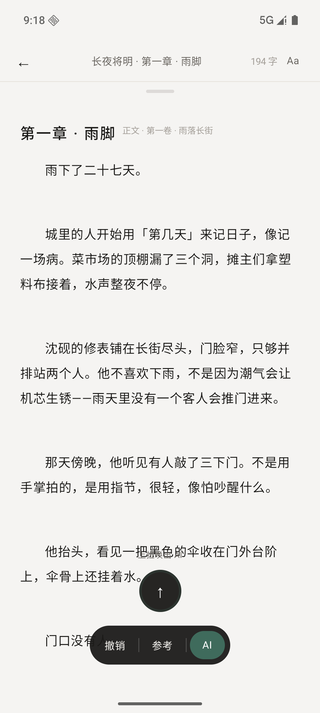
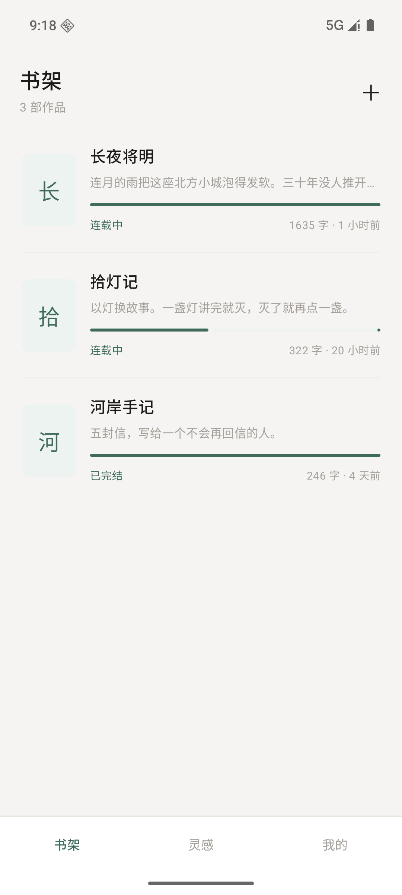
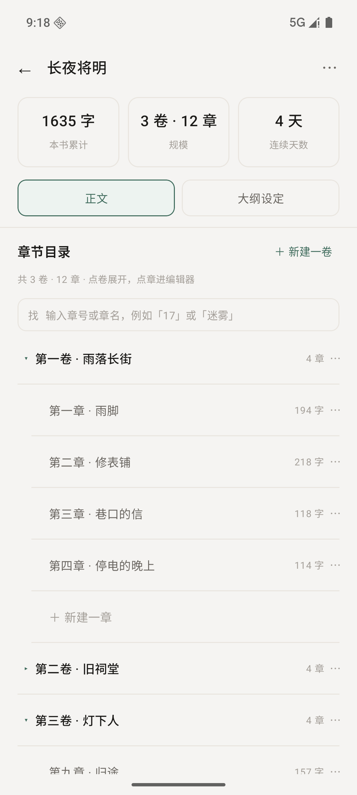
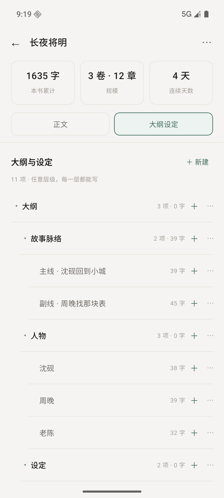
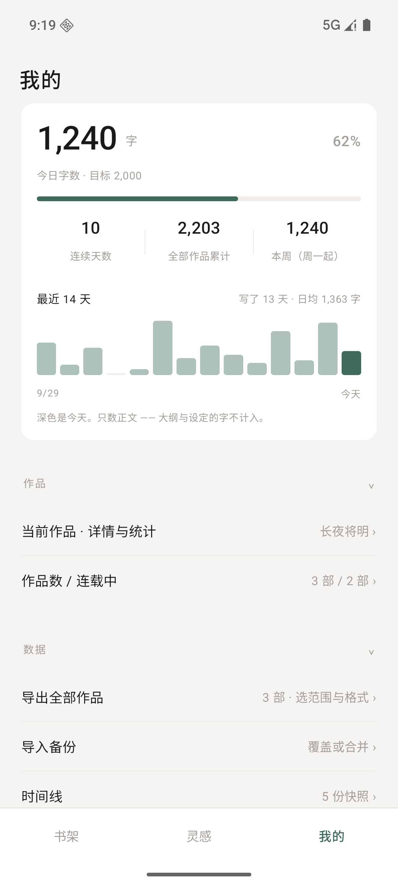
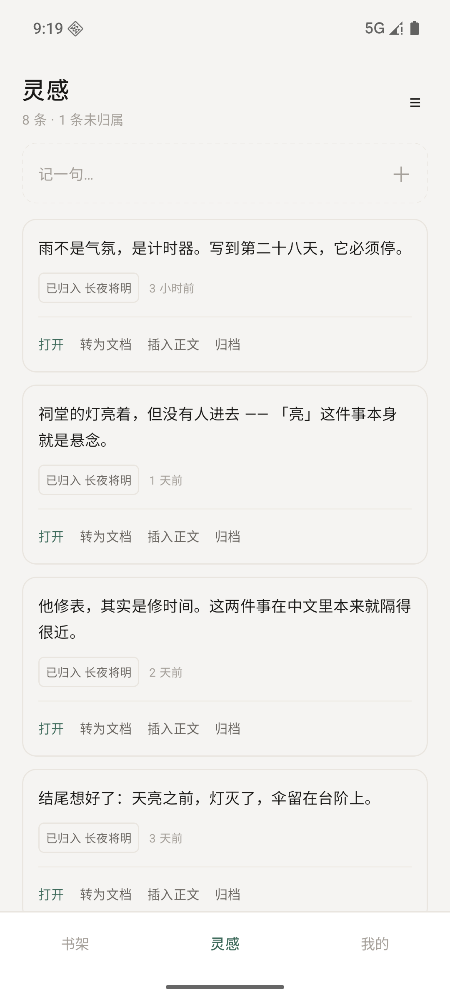

写作是件孤独的活。你真正想要的，是一个读过你全部草稿的人 —— 他记得你在第三章埋下的那盏灯，知道你写到哪了，也记得你本来想去哪。
乐子小说想让 AI 成为这个人：读得懂你的大纲、正文和设定，不抢你的笔， 只在你抬头的时候开口。续写、圆场、考据、起名，各有分工，各说各的话。
不是「一键生成小说」。是让 AI 像人一样，陪你写完这一部长篇。

它现在长这样
上面那些话，下面是它当下的样子 —— 六屏都是实机截图，不是效果图。左右滑动看全部，点任意一张可以放大。





换一个地方写，差在哪
理想落到具体，就是下面三件事。左边是通行做法，右边是乐子小说怎么做。
中间漏了一章，插回去 —— 后面两百多个章号得手动一个个往后挪，改完还容易数错。
章号是算出来的，不是存下来的。插入一章、调整卷的先后，后面的编号自己跟上。
大纲在一棵树里，正文在另一棵树里。写到一半要找「那个设定」，得先退出正在写的地方。
大纲、卷纲、人物、设定和正文在同一个界面，用同一种手势唤出，光标不丢。
删掉一段就是删掉了。想找回来，只能翻旧备份，还不一定翻得到。
删除先进回收站，能还原回原来的位置。另外还有定时快照和导出 JSON 两条退路。
把长篇需要的东西，放进同一个界面
不是功能堆砌。每一条都对着一个具体的瞬间 —— 写到一半想翻大纲、写完一章想知道今天写了多少、换台手机不想丢稿子。
卷 · 章，就两级
正文只有两层：卷下面是章。
章号由位置算出来，你永远不用手填。插入一章、调换卷序，后面几百个章号不用改，也不会数错。
大纲不再住在别处
大纲、卷纲、人物、设定在同一棵树里。
每一层都能直接写正文，也没有「文件夹」这种东西挡在中间。想到哪一层就写哪一层。
今天写了多少，一眼看到
今日字数、连续天数、最近十四天。
只数正文 —— 大纲和设定的字不算进来，两个口径不会互相打架。统计跟着书走，换书就换一套。
删错了，能捡回来
删掉的东西先进回收站，什么时候都能还原回原位。
此外还有三条退路：导出 JSON、加密备份、定时快照。换手机就把备份文件带过去。
AI 是你的，不是平台的
续写、结构建议、起名考据分成不同智能体，各带自己的提示词。
中转站地址和模型由你自己填 —— 走你自己的通道，稿子不经过我们的服务器。
写作的时候，世界安静
写作本身完全离线，不需要注册，也不需要登录。
参考内容、会话列表、AI 对话用同一种手势唤出，滑一下就回去，光标还在原来的位置。
这一版的真实规格
没有隐藏的「付费版」，也没有要登录才能用的功能。写下来的东西只存在你自己手机上。
内测版现在能用来写长篇了，但还在补齐
- 升级会频繁。装好之后可以直接在应用里检查更新，不必每次回这个页面重新下载。
- 数据结构还可能调整。重要的稿子请自己导出一份 JSON 备份，别只留一份在手机上。
- 装过更早的 0.1.0 的话，需要先卸载再装这一版 —— 从这一版起换成正式签名，旧包盖不上去。
下载乐子小说 · 内测版
点下面的按钮开始下载。下载完成后点开文件，系统会问一次是否允许安装 —— 允许，然后下一步即可。
手机扫码打开本页
点下载
浏览器开始下载安装包，约 9.1 MB。
打开文件
在通知栏或「下载」里点开这个 apk。
允许安装
系统提示时，允许「安装未知应用」。
开始写
装好之后打开「我的 → 检查更新」，以后升级在应用里就能完成。
现在到哪一步了
这是内测版，能真正用来写长篇，但还有几块没做完 —— 写在这里，免得你装上去才发现。
这一版刚做完
- 应用内检查更新 —— 在「我的」里点一下，直接在 App 里下载并安装新版
- 正式签名 —— 之后每一版都能覆盖安装、稿子不丢
- 六屏界面与正文编辑器的这一轮打磨
正在做
- AI 对话通道 —— 中转站与模型可以配了，对话历史还没接上
- 智能体提示词的细化，让不同职责的回复更分得开
- 导出稿的样式模板
还没开始
- 深色模式（现在是纸感浅色，只有一个主题）
- 多设备同步 —— 目前靠手动导出 / 导入
- 上架应用商店，取代现在的网页分发